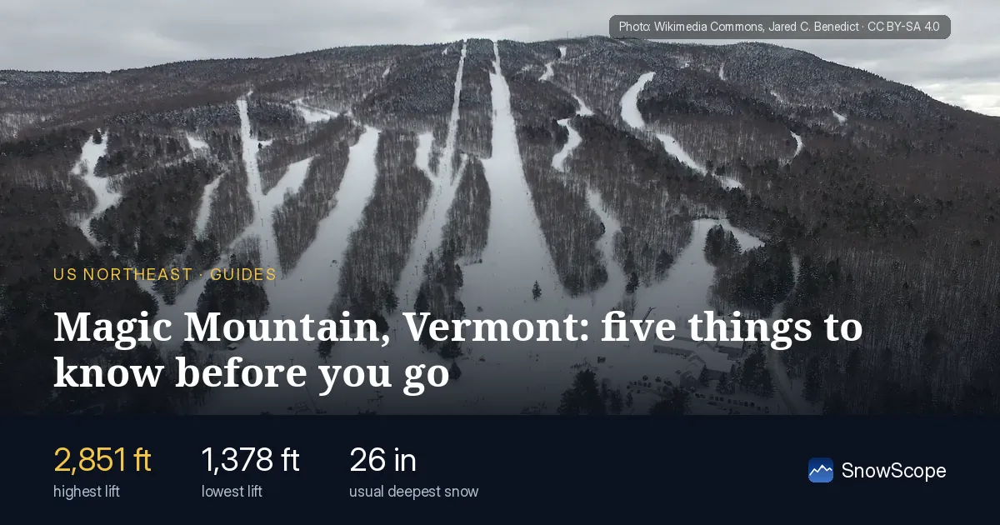
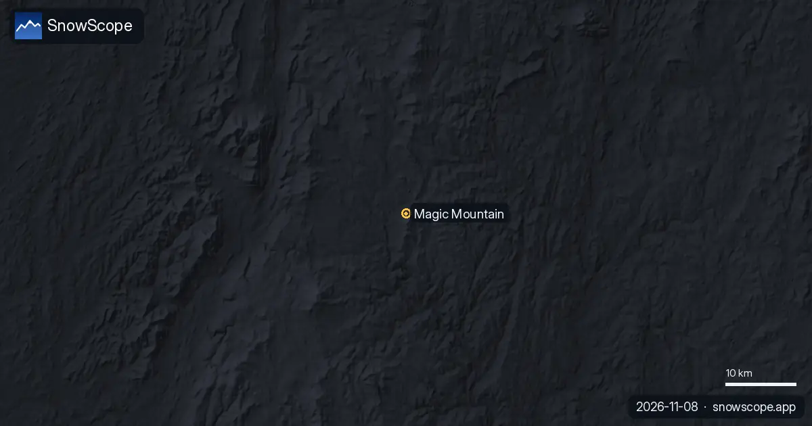

Magic Mountain, Vermont: five things to know before you go
Magic Mountain is the kind of ski area people describe with affection rather than statistics: independent, steep for its size, and proud of it. It sits in Londonderry, in southern Vermont.
See the live snow forecast for Magic Mountain Ski Area in the SnowScope appSnow depth, powder alerts and the 3D map, free.
1. Natural snow is thin here, so follow the storms
Southern Vermont is not a deep-snow region. At the top of the hill, 2,851 ft (869 m), the usual season peak is only about 26 in (67 cm), and at the base, 1,378 ft (420 m), about 21 in (54 cm). Winters swing widely: the thinnest in our record peaked at about 6 in (14 cm), the deepest near the top at about 46 in (116 cm). Snowmaking covers about half of the terrain, so the groomed runs work more often than these numbers suggest; for the trees, you want natural snow.
The best plan is to go in the days right after a good storm. That timing matters more at Magic Mountain than at big resorts with more snow guns and terrain. When natural snow falls, it makes the difference between a good day and a great one, especially in the glades where the snow clings longer in the shade.

2. The steep glades are the point
Magic Mountain has the most extensive tree-skiing network in southern Vermont, with pitches reaching 45 degrees, on a vertical drop of about 1,500 ft from a base at 1,350 ft to a summit at 2,850 ft. There are 39 trails on 205 acres. For confident skiers that is the attraction; for beginners, there is less here than at the big resorts nearby, so pick lessons and easy runs carefully.
The glades reward you with shelter from wind and softer snow that holds longer in spring. On thin-snow days, the open runs can be scraped hard, but the trees stay playable. That is why experienced skiers keep coming back.
3. December is risky; February and March are best
Near the top a typical winter has about 6 in (14 cm) in December, 11 in (28 cm) in January and about 17 in (43 cm) in February, then about 17 in (42 cm) in March. December trips depend on snowmaking and cold nights; there is little cushion if the weather warms. At the base, the numbers are even tighter: only 1 in (1 cm) is usual in November, 2 to 11 in (2 to 11 cm) in December.
February and early March give the trees their best chance. The best single week of our record, in early March, has at least 20 in (50 cm) at the top in half of all winters. By late winter, the base has 2 to 31 in (2 to 31 cm) built up, and the top often sits above 50 in (127 cm). That is when you should book your trip.
4. Ride the Red Chair at least once
The Red Chair is a fixed double chairlift built in 1971, slow and a little cold, and part of the hill's identity. Since 2020 the Black Line Quad gives a second way up. On a cold, windy day, dress for a long ride: a face cover and warm gloves make a big difference.
Wind matters more than the thermometer on the exposed side of the mountain. A neck gaiter or balaclava and a helmet that covers your ears keep your skin safe. Pack chemical warmers and spare gloves in a small backpack; wet gloves freeze on the chairlift, and a dry pair at lunch makes the afternoon possible.
5. Snow here has stayed steady
The Swiss ski instructor and filmmaker Hans Thorner founded the area because the terrain reminded him of the Alps at home. The hill closed in 1991, reopened in 1997, and struggled through several owners before Ski Magic LLC reopened it in late December 2016. Small hills like this survive on their regulars and their steep terrain.
In our record its snow has not declined. The median peak near the top was about 21 in (54 cm) in our first fifteen winters and about 25 in (63 cm) in the last fifteen. Last winter, 2025-26, was about normal at about 26 in (66 cm). That stability is rare in southern New England and speaks to the hill's location in the Green Mountains.
What to pack for Magic Mountain
Thin, fast-drying base layers (wool or synthetic, never cotton) let you stay dry during the day and regulate heat on the chairlift. A warm mid layer and a windproof shell trap heat and block the wind that matters more than the thermometer. Layers let you open up on the long run down and close up again on the chair.
Bring goggles with a lens for low light; grey days are common in Vermont. A second lens or a pair of sunglasses helps on bright spring days. Have your edges tuned before the trip, or rent skis that were serviced recently. With a thinner snowpack, a thaw and a freeze turn the surface hard quickly, and sharp edges make the difference between control and skidding.
Tips for skiers
- Go in the days right after a good storm, especially for the glades. Natural snow is thin here and melts fast.
- Book your trip for February or early March. December depends on snowmaking; late winter gives the trees the best chance.
- Dress in layers and bring a face cover, warm gloves and chemical warmers. Wind on the Red Chair can be fierce.
- Pack goggles for low light and a second lens for bright days. The snow surface hardens quickly when thin.
- Check the official avalanche bulletin at avalanche.org before you go off-piste, and confirm that the resort is open on the day you plan to visit.
About these numbers
Resort snow depths are the deepest snow on the resort's upper slopes on the date shown; they are estimates for an area, not a measurement at one point. Forecasts can change. Always read the official avalanche bulletin before going off-piste.
Official avalanche bulletins: avalanche.org (US national portal)
Cite this report
For research, teaching or the press: the numbers and charts are free to reuse under CC BY 4.0 with this citation.
SnowScope (2026), Magic Mountain, Vermont: five things to know before you go, https://snowscope.app/blog/en/2026/11/magic-mountain-vermont-five-things-before-you-go.html, accessed 2026-11-09
SnowScope (Atlas Labs). (2026, November 9). Magic Mountain, Vermont: five things to know before you go. SnowScope snow reports. https://snowscope.app/blog/en/2026/11/magic-mountain-vermont-five-things-before-you-go.html
BibTeX
@misc{snowscope2026magicmountainvermontfive,
author = {{SnowScope (Atlas Labs)}},
title = {Magic Mountain, Vermont: five things to know before you go},
year = {2026},
month = nov,
howpublished = {\url{https://snowscope.app/blog/en/2026/11/magic-mountain-vermont-five-things-before-you-go.html}},
note = {Published 2026-11-09 16:24 UTC; accessed 2026-11-09}
}· CC BY 4.0 · Methods, data and tools →
Magic Mountain Ski Area: snow and temperature by height, this winter vs last (tools) →
Follow Magic Mountain Ski Area
Free: a message when fresh snow is coming, and the forecast every morning.
More snow reports

Sugarbush Resort tops the Northeast with 22 cm of new snow forecast over 14 days starting 13 November. First week brings most of the total.

Ski Eldorado received 6 in of fresh snow in 72 hours as 788 sq mi turned white across the US Northeast on 8 November.

Okemo Mountain will get 15 in (38 cm) of new snow by November 14, with 11 in (29 cm) on November 13, SnowScope from November 11 shows.